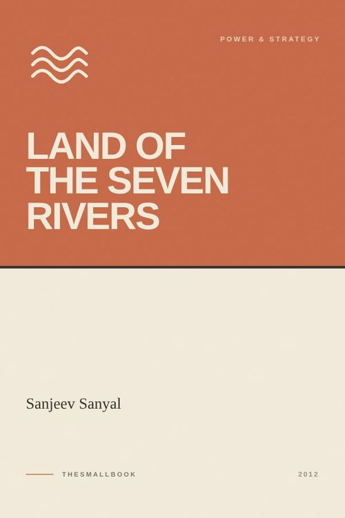

Why Did The Harappan Collapse Fail?
The Advanced Civilization That Vanished Into Its Own Success
📜 What Happened
The Indus Valley (Harappan) civilization was the most advanced of its age: planned cities with drainage that rivals modern engineering, standardized weights and measures, writing, and trade spanning three thousand kilometres. For 700 years it flourished. Then, around 1900 BCE, it collapsed - and the mystery is that there was no obvious enemy, no invasion, no fire. The leading evidence: a slow environmental decline - the monsoons weakened, the river systems shifted, the floodplains that fed millions became marginal. The cities kept their sophisticated infrastructure right up to the end, but the environment that the infrastructure depended on had quietly changed. A civilization that had perfected its systems never adapted its systems to the new reality, and the great cities were abandoned - their writing lost for four thousand years.
☠️ The Fatal Mistake
Optimizing for the world as it was - the Harappans had no enemies, no wars, and no answer for environmental change.
🧠 The Lesson (Free for You)
The most dangerous moment for any system is not the crisis - it is the slow drift of the conditions the system was built for. Empires, companies and careers rarely collapse from a single blow; they collapse when the environment shifts and the people in charge keep optimizing yesterday's model. The Harappan lesson: your greatness is a report on the past. The question is not 'are we the best at what we do' but 'is what we do still what the world needs.'
The Antidote Book

Sanjeev Sanyal's sweeping rewrite of Indian history argues that the subcontinent's story is best understood through its geography - the seven great rivers (Sindhu, Saraswati, Ganga, Yamuna, Brahmaputra, Narmada,…
📖 OPEN THE FULL INTERACTIVE BREAKDOWN →Questions people ask about The Harappan Collapse
Why did The Harappan Collapse fail? Optimizing for the world as it was - the Harappans had no enemies, no wars, and no answer for environmental change.
How much was lost? A civilization of a million people - cities, writing, trade - gone without a single war
What is the lesson? The most dangerous moment for any system is not the crisis - it is the slow drift of the conditions the system was built for. Empires, companies and careers rarely collapse from a single blow; they collapse when the environment shifts and the people in charge keep optimizing yesterday's model. The Harappan lesson: your greatness is a report on the past. The question is not 'are we the best at what we do' but 'is what we do still what the world needs.'
The Harappan Collapse kyun fail hua? In simple English: Optimizing for the world as it was - the Harappans had no enemies, no wars, and no answer for environmental change. The cost was A civilization of a million people - cities, writing, trade - gone without a single war.
Keep digging
More historical failures · Open the full Graveyard
Read the antidote book summary: Land of the Seven Rivers
Related failures
- Why did The Churning of the Ocean fail? ~5000 BCE (epic) · The Great Co-operation That Produced the Poison First
- Why did The Nanda Empire fail? ~321 BCE · The Richest Empire in India, Lost Because the King Couldn't Keep a Promise
- Why did The Kurukshetra War fail? ~3000 BCE (epic) · The War Everyone Wanted That Destroyed Everyone Who Wanted It
- Why did Easter Island fail? ~1600 · They Cut Down the Last Tree
- Why did Qin Shi Huang fail? 210 BC · The Emperor Who Drank Immortality to Death
- Why did Alitalia fail? 2021 · The flag carrier is replaced
Questions people ask about The Harappan Collapse
Why did The Harappan Collapse fail? Optimizing for the world as it was - the Harappans had no enemies, no wars, and no answer for environmental change.
How much was lost? A civilization of a million people - cities, writing, trade - gone without a single war
What is the lesson? The most dangerous moment for any system is not the crisis - it is the slow drift of the conditions the system was built for. Empires, companies and careers rarely collapse from a single blow; they collapse when the environment shifts and the people in charge keep optimizing yesterday's model. The Harappan lesson: your greatness is a report on the past. The question is not 'are we the best at what we do' but 'is what we do still what the world needs.'
The Harappan Collapse kyun fail hua? In simple English: Optimizing for the world as it was - the Harappans had no enemies, no wars, and no answer for environmental change. The cost was A civilization of a million people - cities, writing, trade - gone without a single war.
Keep digging
More historical failures · Open the full Graveyard
Read the antidote book summary: Land of the Seven Rivers
Related failures
- Why did The Churning of the Ocean fail? ~5000 BCE (epic) · The Great Co-operation That Produced the Poison First
- Why did The Nanda Empire fail? ~321 BCE · The Richest Empire in India, Lost Because the King Couldn't Keep a Promise
- Why did The Kurukshetra War fail? ~3000 BCE (epic) · The War Everyone Wanted That Destroyed Everyone Who Wanted It
- Why did Easter Island fail? ~1600 · They Cut Down the Last Tree
- Why did Qin Shi Huang fail? 210 BC · The Emperor Who Drank Immortality to Death
- Why did The Twentieth Year: The Fall of Kabul, 2021 fail? 2021 · Twenty Years, One Runway
Searchable, filterable, simple to read - they paid billions; you get the lesson.